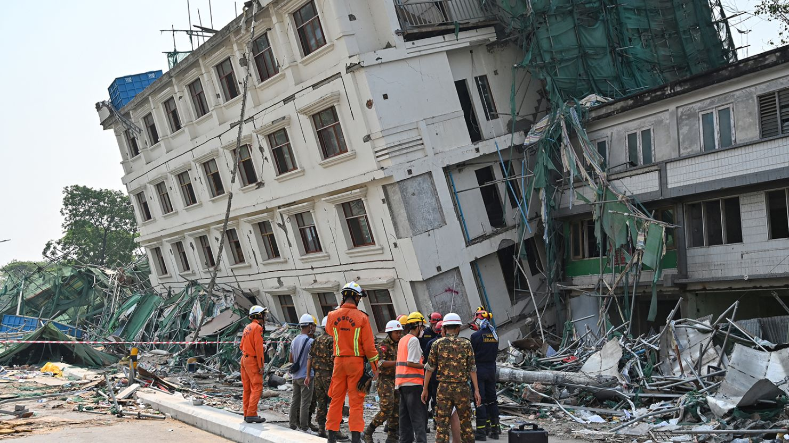
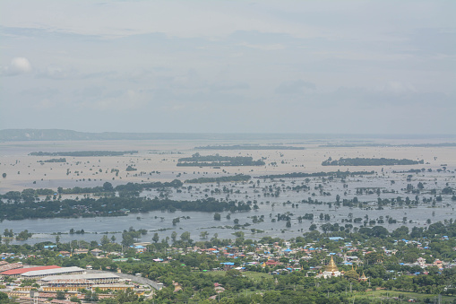
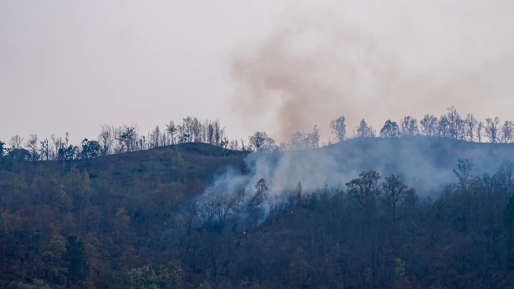

Causes and Consequences

Earthquakes and Landslides
Causes: Earthquakes occur when built-up energy is suddenly released along faults in the Earth's crust. Landslides happen when soil and rocks move down unstable slopes, often due to heavy rainfall or earthquakes.
Consequences: They can damage buildings, roads, and bridges, destroy homes, and cause injuries or loss of life.

Floods and Tsunamis
Causes: Floods can happen because of heavy rainfall, overflowing rivers, and poor drainage. Tsunamis are usually caused by underwater earthquakes and other sudden movements of the ocean floor.
Consequences: Flooding can damage houses, farmland, roads, and water supplies. Tsunamis can cause severe coastal damage and threaten communities.

Cyclones and Severe Storms
Causes: Tropical cyclones develop over warm ocean waters under suitable atmospheric conditions. They bring strong winds, heavy rainfall, and sometimes storm surges.
Consequences: Strong winds and flooding can damage houses, trees, power lines, and transportation systems. Coastal communities may also face dangerous storm surges.

Wildfires
Causes: Wildfires can begin naturally through lightning or through human activities. Dry vegetation, hot weather, and strong winds can help fires spread.
Consequences: Wildfires destroy forests and habitats, affect air quality, threaten nearby communities, and damage natural resources.